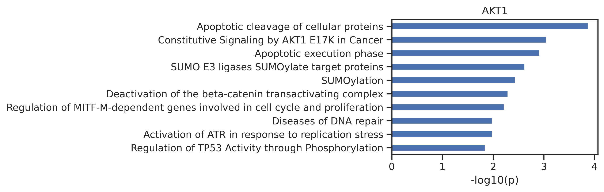
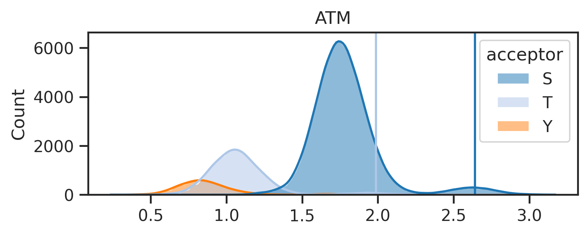
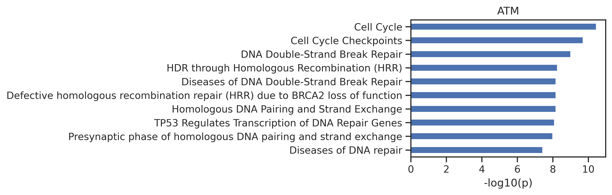
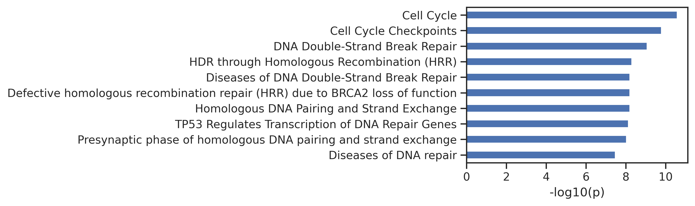
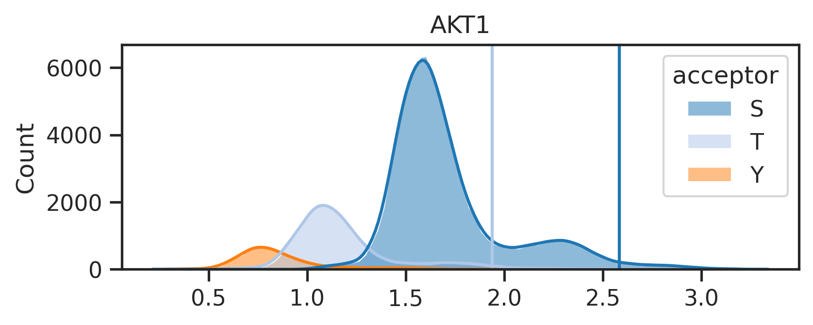
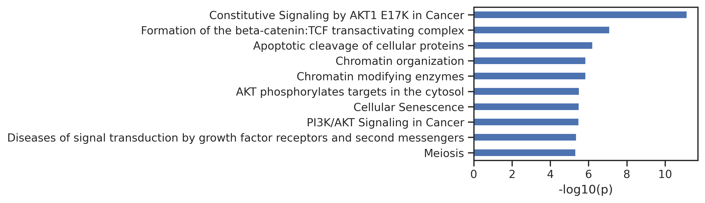
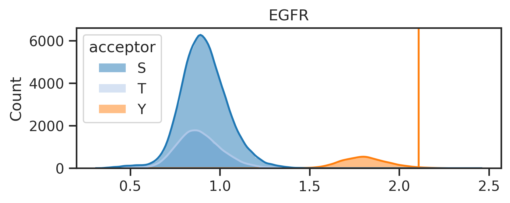
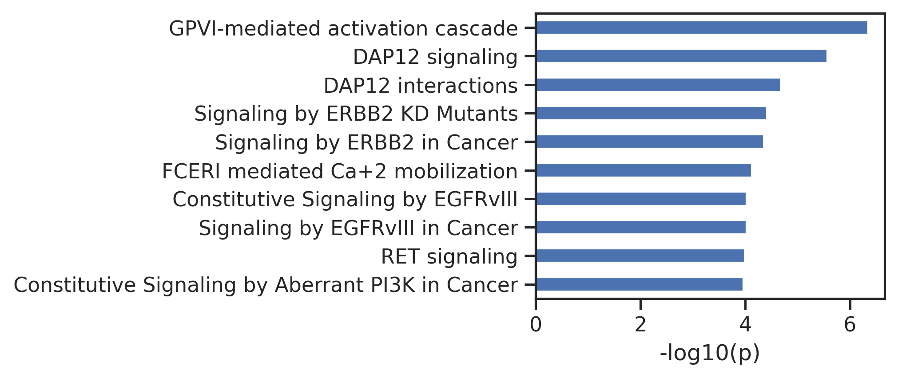

!pip install reactome2pyReactome pathway analysis
Setup
from reactome2py import analysis
from matplotlib import pyplot as plt
from pandas import json_normalize
import os, pandas as pd, numpy as np, seaborn as sns
from tqdm import tqdm
from PIL import ImageUtils
def get_reactome_raw(gene_list):
"Reactome pathway analysis for a given gene set; returns raw output in dataframe."
gene_str = ','.join(gene_list)
# set page size and page to -1 ensures to display all pathway results, sort by pvalue instead of fdr, projection set to True is consistent with official web
result = analysis.identifiers(gene_str, page_size='-1', page='-1', sort_by='ENTITIES_PVALUE',projection=True)
out = json_normalize(result['pathways'])
return outExample:
# get gene list
genes = pd.read_csv('raw/AKT1.csv')['gene'].tolist()
get_reactome_raw(genes).head()| stId | dbId | name | llp | inDisease | species.dbId | species.taxId | species.name | entities.resource | entities.total | entities.found | entities.ratio | entities.pValue | entities.fdr | entities.exp | reactions.resource | reactions.total | reactions.found | reactions.ratio | |
|---|---|---|---|---|---|---|---|---|---|---|---|---|---|---|---|---|---|---|---|
| 0 | R-HSA-111465 | 111465 | Apoptotic cleavage of cellular proteins | True | False | 48887 | 9606 | Homo sapiens | TOTAL | 38 | 33 | 0.002428 | 0.000134 | 0.322956 | [] | TOTAL | 38 | 38 | 0.002506 |
| 1 | R-HSA-5674400 | 5674400 | Constitutive Signaling by AKT1 E17K in Cancer | True | True | 48887 | 9606 | Homo sapiens | TOTAL | 29 | 25 | 0.001853 | 0.000889 | 0.878858 | [] | TOTAL | 18 | 18 | 0.001187 |
| 2 | R-HSA-75153 | 75153 | Apoptotic execution phase | True | False | 48887 | 9606 | Homo sapiens | TOTAL | 54 | 39 | 0.003450 | 0.001225 | 0.878858 | [] | TOTAL | 57 | 57 | 0.003759 |
| 3 | R-HSA-3108232 | 3108232 | SUMO E3 ligases SUMOylate target proteins | False | False | 48887 | 9606 | Homo sapiens | TOTAL | 184 | 104 | 0.011755 | 0.002371 | 0.878858 | [] | TOTAL | 132 | 102 | 0.008705 |
| 4 | R-HSA-2990846 | 2990846 | SUMOylation | False | False | 48887 | 9606 | Homo sapiens | TOTAL | 193 | 107 | 0.012330 | 0.003650 | 0.878858 | [] | TOTAL | 141 | 111 | 0.009298 |
def plot_path(react_out, top_n=10,max_label_length=80):
"Plot the output of get_reactome."
# Extract the data and reverse it
data = react_out.head(top_n).set_index('name')['-log10_pValue'].iloc[::-1]
# Truncate labels if they are too long
truncated_labels = [label[:max_label_length] + '...' if len(label) > max_label_length else label for label in data.index]
data.index = truncated_labels
# Calculate the required width: base width + additional width for the longest label
base_width = 2
max_label_length = max(data.index, key=len)
additional_width = len(max_label_length) * 0.1 # Adjust scaling factor as needed
figsize = (base_width + additional_width, 3*top_n/10) # Adjust height as necessary
# Plotting
data.plot.barh(figsize=figsize)
plt.ylabel('')
plt.xlabel('-log10(p)')
plt.tight_layout() # Adjust layout to fit everythingdef get_reactome(gene_list, plot=True):
"Given a gene list, get the processed output of reactome; output contains additional -log10(p)"
out = get_reactome_raw(gene_list)
out = out[['name','entities.pValue']].rename(columns={'entities.pValue':'pValue'})
out['-log10_pValue'] = -np.log10(out['pValue']).round(3)
if plot:
plot_path
return outout = get_reactome(genes)
out.head()| name | pValue | -log10_pValue | |
|---|---|---|---|
| 0 | Apoptotic cleavage of cellular proteins | 0.000134 | 3.874 |
| 1 | Constitutive Signaling by AKT1 E17K in Cancer | 0.000889 | 3.051 |
| 2 | Apoptotic execution phase | 0.001225 | 2.912 |
| 3 | SUMO E3 ligases SUMOylate target proteins | 0.002371 | 2.625 |
| 4 | SUMOylation | 0.003650 | 2.438 |
sns.set(rc={"figure.dpi":300, 'savefig.dpi':300})
sns.set_context('notebook')
sns.set_style("ticks")plot_path(out)
plt.title('AKT1');
Run
from katlas.core import *
from katlas.plot import *For the original human phosphoproteome (all-uppercase):
site= Data.get_combine_site_psp_ochoa()For phosphorylated human phosphoproteome, uncheck below:
# site = Data.get_combine_site_phosphorylated()For PSP site, uncheck below:
# site = Data.get_psp_human_site()
# site['acceptor'] = site.site_seq.str[7]
# # remove none sty-phosphoacceptor sequence
# site = site['acceptor'].isin(['s','t','y'])]
# # convert lowercase other than s,t,y to capital; convert rare aa to _
# site['site_seq'] = site.site_seq.apply(convert_string)
# site = site.reset_index(drop=True)
# site.to_parquet('PSP_human_processed_sites.parquet')
# site = pd.read_parquet('PSP_human_processed_sites.parquet')As the original phosphoproteome is an all-uppercase dataset, we choose param to be param_CDDM_upper
param = param_CDDM_upper
## for phosphorylated dataset, we will choose the standard param
# param = param_CDDM
## or
# param = param_PSPAref = param['ref']results = predict_kinase_df(site,'site_seq',**param)input dataframe has a length 121419
Preprocessing
Finish preprocessing
Merging reference
Finish mergingresult_df = pd.concat([site,results],axis=1)Plot score distribution
result_df['acceptor'] = result_df.site_seq.str[7].str.upper()palette = get_color_dict(['S','T','Y'],'tab20')
hist_params = {'element':'poly',
'edgecolor': None,
'alpha':0.5,
'bins':100,
'kde':True,
'palette':palette}palette{'S': (0.12156862745098039, 0.4666666666666667, 0.7058823529411765),
'T': (0.6823529411764706, 0.7803921568627451, 0.9098039215686274),
'Y': (1.0, 0.4980392156862745, 0.054901960784313725)}def plot_hist(df,colname,sty_thr=None,hue='acceptor'):
"Plot histogram of a column (kinase). "
plt.figure(figsize=(6,2))
sns.histplot(data=df,x=colname,hue=hue,**hist_params)
plt.xlabel('')
plt.title(colname)
if sty_thr:
for acceptor,thr in sty_thr.items():
if thr is not None:
plt.axvline(thr,color=palette[acceptor])Ratio method to determine threshold
- Step1: Locate the max phosphoacceptor in the STY ratio of a kinase
- Step2: Get top 2% sites for that phosphoacceptor, and get the number of sites.
- Step3: Use the number and STY ratio to calculate the number of sites for other phosphoacceptor.
def get_ratio(df, kinase, ref, pct=0.98):
# Copy relevant columns and explode gene column
data = df[['gene', 'acceptor', kinase]].copy()
data['gene'] = data.gene.str.split('|')
data = data.explode('gene')
# Get STY ratio from reference data
row = ref[['0S', '0T', '0Y']].loc[kinase]
if row['0Y'] > 0.8: # apply to pspa
ratio = {'S': 0, 'T': 0, 'Y': 1}
elif 0.1 < row['0Y'] < 0.8: # does not apply to pspa
ratio = {'S': row['0S'], 'T': row['0T'], 'Y': row['0Y']}
else: # apply to pspa
total = row['0S'] + row['0T']
ratio = {'S': row['0S'] / total, 'T': row['0T'] / total, 'Y': 0}
# Calculate thresholds and get genes
sty_thr = {'S': None, 'T': None, 'Y': None}
g_list = []
# Identify the largest acceptor and calculate its total for top percentile
max_acceptor = max(ratio, key=ratio.get)
max_data = data[data['acceptor'] == max_acceptor]
thr = max_data[kinase].quantile(pct)
top_max_data = max_data[max_data[kinase]>thr]
top_total = len(top_max_data)
threshold_max = top_max_data[kinase].min()
# Scale other acceptors and get the threshold
for acceptor in ['S', 'T', 'Y']:
if ratio[acceptor] != 0:
scaled_data = data[data['acceptor'] == acceptor]
scaled_data = scaled_data.sort_values(kinase, ascending=False)
n_top = int(top_total * (ratio[acceptor] / ratio[max_acceptor]))
top_scaled_data = scaled_data.head(n_top)
g_list.append(top_scaled_data['gene'])
sty_thr[acceptor] = top_scaled_data[kinase].min()
genes = pd.concat(g_list).drop_duplicates().dropna().tolist()
return sty_thr, genesPipeline
- Get threshold and genes within the percentiile
k = 'ATM'sty_threshold,genes = get_ratio(result_df,k,ref=ref)sty_threshold{'S': 2.6404023, 'T': 1.9869915, 'Y': None}- with threshold, plot score distribute
sns.set(rc={"figure.dpi":300, 'savefig.dpi':300})
sns.set_context('notebook')
sns.set_style("ticks")plot_hist(result_df,k,sty_threshold)
- run reactoe pathway analysis
out = get_reactome(genes)# exclude paths that has no variance across kinases
exclude=['GTPase','SUMO']
for n in exclude:
out = out[~out.name.str.contains(n)]- plot path
plot_path(out,10)
plt.title(k);
Run all kinases and save images
from pathlib import Path
from fastcore.xtras import *def get_img(df, kinase_list, ref, SAVE=False,save_folder='cddm',exclude=['GTPase','SUMO'],pct=0.98):
paths = []
for kinase in tqdm(kinase_list):
sty_thr,genes = get_ratio(df,kinase,ref=ref,pct=pct)
out = get_reactome(genes)
out['kinase'] = kinase
paths.append(out)
# plot score distribution
plot_hist(df,kinase,sty_thr)
distribute_figname = Path(f'{save_folder}/score_distribute/{kinase}.png')
distribute_figname.parent.mkdir(parents=True,exist_ok=True)
plt.savefig(distribute_figname,bbox_inches='tight', pad_inches=0.3) if SAVE else plt.show()
plt.close()
# exclude paths that has no variance across kinases
out_cut = out.copy()
for n in exclude:
out_cut = out_cut[~out_cut.name.str.contains(n)]
# plot pathway bargraph
plot_path(out_cut,10)
# title_acceptor ='/'.join(acceptors)
# plt.title(f'{kinase}, top 2% substrates in {title_acceptor} sites')
path_figname = Path(f'{save_folder}/path_fig/{kinase}.png')
path_figname.parent.mkdir(parents=True,exist_ok=True)
plt.savefig(path_figname,bbox_inches='tight', pad_inches=0) if SAVE else plt.show()
plt.close()
return pathspaths = get_img(result_df,['ATM','AKT1','EGFR'],ref,SAVE=False,save_folder='test') 0%| | 0/3 [00:00<?, ?it/s]
33%|███▎ | 1/3 [00:01<00:02, 1.39s/it]

67%|██████▋ | 2/3 [00:02<00:01, 1.32s/it]

100%|██████████| 3/3 [00:03<00:00, 1.32s/it]Uncheck below to generate figures for all of the kinases:
# paths = get_img(result_df,ref.index,ref,SAVE=True,save_folder='test')The above line will create two folders under the {save_folder}: - path_fig folder contains the pathway analysis. - score_distribute folder contains histogram of score distribution.
Combine images for pdf
def combine_images_vertically(image_paths, output_path):
# Open images and convert them to 'RGBA' for uniformity
images = [Image.open(image_path).convert('RGBA') for image_path in image_paths]
# Calculate the total width as the maximum width of any image
total_width = max(image.width for image in images)
# Calculate the total height by summing the heights of all images
total_height = sum(image.height for image in images)
# set the background white board size
# total_width, total_height = 2010,1200
total_width, total_height = 3000,1750
# Create a new image with a white background in 'RGBA' mode
combined_image = Image.new('RGBA', (total_width, total_height), (255, 255, 255, 255))
# Initialize the y_offset to start pasting images from the top
y_offset = 0
for image in images:
# Calculate the x position to center the image
x_offset = (total_width - image.width) // 2
# Paste the current image into the combined image
combined_image.paste(image, (x_offset, y_offset), image)
# Update the y_offset to move to the next position for the next image
y_offset += image.height
# Save the combined image to the specified output path
combined_image.save(output_path)Uncheck below to merge the pathway figures and score distribution figures together:
# folders = ["test/score_distribute", "test/path_fig"]
# for k in tqdm(ref.index):
# filename = f"{k}.png"
# image_paths = [os.path.join(folder, filename) for folder in folders]
# output_path = Path(f"test/combine/{k}.png")
# output_path.parent.mkdir(parents=True,exist_ok=True)
# combine_images_vertically(image_paths, output_path)Save path in csv
Uncheck below to save pathway csv:
# path_data = pd.concat(paths)
# path_data = path_data[['kinase','name','pValue','-log10_pValue']]
# path_data.columns = ['kinase','Reactome_pathway','pValue','neg_log10_pValue']
# path_data.to_csv('pathway_analysis.csv',index=False)